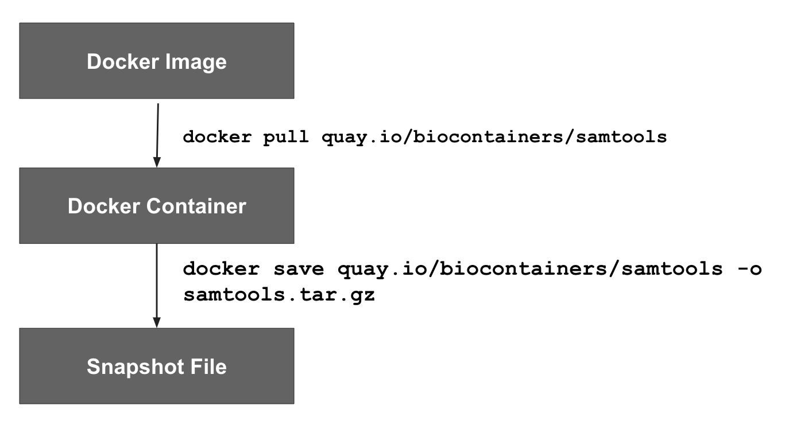

flowchart TD A[start ttyd] --> B[docker pull <br> from registry] B --> C[docker save to <br> snapshot file] C --> D[dx upload <br> snapshot to <br> project storage] D --> E[terminate ttyd]
Make sure you are logged into the platform using dx login and that your course project is selected with dx select.
In your shell (either on your machine or in binder), make sure you’re in the bash_bioinfo_scripts/containers/ folder:
cd containers/docker pull and docker save with the ttyd appThere is a replication crisis out there. Even given a script and the raw data, it is often difficult to replicate the results generated by a study.
Why is this difficult? Many others have talked about this, but one simple reason is that the results are tied to software and database versions.
This is the motivation for using containers - they are a way of packaging software that ‘freezes’ the software versions. If you provide the container that you used to generate the results, other people should be able to replicate your results even if they’re on a different operating system.
In order to be unambiguous with our language, we’ll use the following definitions:

docker pull to get image, docker commit to push changes to registry, can also generate image from a Dockerfile,docker pull from a repository..tar.gz) that contains the Docker container. Generate using docker save on a container. Also known as an image file on the platform.DockerHub has a pull limit of 200 pulls/day/user. You will face this limit a lot if you just use the image url.
So, if you are processing more than 200 files (or Jobs), you should save the docker image into platform storage as a snapshot file.
Let’s talk about the basic snapshot building process.
Security is always a concern when running Docker images. The docker group has elevated status on a system, so we need to be careful that when we’re running them, they aren’t introducing any system vulnerabilities.
These are mostly important when running containers that are web-servers or part of a web stack, but it is also important to think about when running jobs on the cloud.
Here are some guidelines to think about when you are working with a container.
flowchart TD A[start ttyd] --> B[docker pull <br> from registry] B --> C[docker save to <br> snapshot file] C --> D[dx upload <br> snapshot to <br> project storage] D --> E[terminate ttyd]
ttydUp until now, we have been using our own machine or the binder shell for doing our work.
We’re going to pull up a web-enabled shell on a DNAnexus worker with the ttyd app. ttyd is useful because:
docker is already installed, so we can docker pull our container and docker save our snapshot to the ttyd instance.To open ttyd, open the Tool Library under Tools and select your project.
#| eval: false
docker pull quay.io/biocontainers/samtools:1.15.1--h1170115_0On your ttyd instance, do a docker pull to pull your image from the registry. Note that we’re pulling samtools from quay.io here, from the biocontainers user.
We’re also specifying a version tag - the 1.15.1--h1170115_0 to tie our samtools to a specific version. This is important - most docker pull operations will pull from the latest tag, which is not tied to a specific version. So make sure to tie your image to a specific version.
When you’re done pulling the docker image, try out the docker images command.
docker images#| eval: false
docker save quay.io/biocontainers/samtools | gzip > samtools_image.tar.gz Now that we’ve pulled the container, we are now going to save it as a snapshot file using docker save. We pipe the output of docker save into gzip to save it as samtools_image.tar.gz
#| eval: false
dx mkdir images/
dx upload samtools_image.tar.gz --destination images/Now we can get our image back into project storage. We’ll create a folder called images/ with dx mkdir and then use dx upload to get our snapshot file into the images/ folder.
One thing to remember is that there is no timeout associated with ttyd. You will get a reminder email after it’s been open after 24 hours, but you will get no warning after that.
So make sure to use dx terminate or terminate the ttyd job under the Manage tab.
Now that we’ve built our Docker snapshot, let’s use it in Swiss Army Knife.
Swiss Army Knife has two separate inputs associated with Docker:
-iimage_file - This is where you put the snapshot file (such as the samtools.tar.gz)-iimage - This is where you’d put the Docker URL (such as quay.io/ucsc_cgl/samtools)So, let’s run a samtools job using our Docker snapshot.
#| eval: false
dx run app-swiss-army-knife \
-iimage_file="images/samtools.tar.gz" \
-iin="data/NA12878.bam"
-icmd="docker run samtools stats * > ${in_prefix}.stats.txt"The main thing that has been changed here is that we’ve added an the -iimage_file input to our dx run statement.
One thing that you might do is extend a Docker image by adding additional software. You can do this by opening up an interactive mode and installing within the container.
What is interactive mode? When you pull a docker image in your ttyd session (Section 8.4.4), you can issue a docker run command with these options:
docker run -it ubuntu:18.04 /bin/bashIt will open up a bash shell in the container.
We’ll start out with the official ubuntu 18.04 container in our ttyd session:
#| eval: false
docker pull ubuntu:18.04
docker imagesIn ttyd, now enter an interactive session:
docker run -it ubuntu:18.04 /bin/bashIf it works, you will open up a bash prompt in the container.
You’ll know you’re in the container if you do an ls and your filesystem looks different.
Now, let’s install EMBOSS (European Molecular Biology Open Software Suite), which is a suite of string utilities for working with genomic data. If you look at the EMBOSS link, you will see that you can install it via apt install, which is available by default in the ubuntu container.
#| eval: false
apt update && apt upgrade
apt install emboss gzip -yNow exit from your container’s interactive mode:
#| eval: false
exitYou’ll be back at the normal ttyd prompt.
docker commit/docker save your new snapshot fileWe created a new container when we installed everything. We’ll need to find it its ID in ttyd.
#| eval: false
docker ps -aWe can see that our new container has the following id. We can use this id to save a new container with docker commit. Now we can save the snapshot file by using docker save:
#| eval: false
docker commit <container_id> emboss:6.6.0
docker save emboss:6.6.0 | gzip > emboss.tar.gz
dx upload emboss.tar.gz --destination images/Docker’s interactive mode is really helpful for testing out scripts and making sure they are reproducible.
If I have a one-off analysis, it may be faster for me to just open up ttyd and use docker run to open up interactive mode, and do work with a container.
Now that you know how to build a snapshot file, you’ve also learned another step in building apps: specifying software dependencies. You can use these snapshot files to specify executables in your app.
You can also use these snapshot files in your WDL workflow.
ttyd